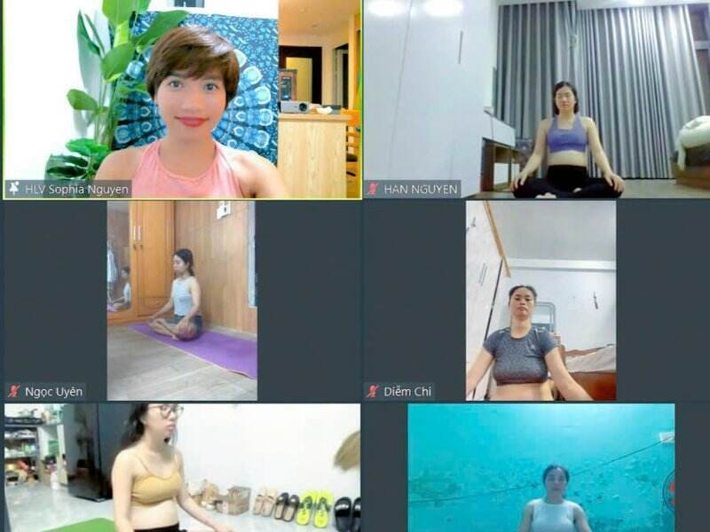

Yoga người lớn · Kiến thức cần biết khi tập yoga
Thở luân phiên mũi: hai bên cân bằng, tâm lắng lại

Thử để ý ngay bây giờ. Bịt nhẹ một bên mũi, thở. Rồi đổi bên.
Có thấy một bên thông hơn bên kia không?
Lần đầu cô làm thế, cô hơi bất ngờ. Hai lỗ mũi của mình, vậy mà không thở giống nhau. Bên trái hôm nay nghẹt hơn một chút. Chiều nay có khi lại ngược lại.
Thở luân phiên mũi là cách cô dùng tay dẫn hơi thở đi qua từng bên, chậm rãi, đều đặn. Vài phút thôi. Khi bỏ tay xuống, hai bên thường đã đều hơn. Và cái đầu đang ồn ào cũng yên đi theo.
- Là gì?
- Nguồn gốc
- Vì sao lại dịu?
- Lợi ích
- Ai cần cẩn thận
- Cách thực hiện
- Video tập cùng
- Những người có thật
- Nguồn tham khảo
Thở luân phiên mũi là gì?
Thở luân phiên mũi là bài thở dùng ngón tay đóng một bên mũi, thở qua bên còn lại, rồi đổi bên. Một vòng gồm bốn nhịp:
- 1Hít vàomũi trái
- 2Thở ramũi phải
- 3Hít vàomũi phải
- 4Thở ramũi trái
Trong yoga, bài thở này có hai cái tên hay gặp. Nadi Shodhana: nadi là kênh, dòng chảy; shodhana là làm sạch. Nghĩa là làm sạch các kênh. Tên thứ hai là Anuloma Viloma, đại ý “thuận chiều rồi ngược chiều”, đúng như cách hơi thở đi vào bên này, đi ra bên kia.
Mỗi trường phái dùng hai cái tên hơi khác nhau. Có nơi gọi bản không giữ hơi là Anuloma Viloma, bản có giữ hơi là Nadi Shodhana. Có nơi gọi chung. Người Việt mình hay gọi giản dị là thở luân phiên, thở đổi mũi, hay thở so le. Tên nào cũng được. Cách làm thì giống nhau.
Nguồn gốc
Yoga cổ nhìn cơ thể như một mạng lưới những dòng chảy nhỏ, gọi là nadi. Các sách xưa nói có tới 72.000 nadi. Ba kênh chính chạy dọc cột sống:
🌙 Ida, bên trái
Kênh mặt trăng. Mát, dịu, hướng vào trong. Gắn với mũi trái.
☀️ Pingala, bên phải
Kênh mặt trời. Ấm, năng động, hướng ra ngoài. Gắn với mũi phải.
Ở giữa là Sushumna, kênh trung tâm. Người xưa tin rằng khi hai bên trăng và mặt trời cân bằng, tâm mới thật sự lắng được. Thở luân phiên mũi sinh ra để làm việc đó.
Sách Hatha Yoga Pradipika, viết khoảng thế kỷ 15, tả bài thở này khá kỹ. Ngồi vững. Hít vào bằng mũi trái, giữ hơi, thở ra bằng mũi phải. Rồi hít vào bằng mũi phải, giữ, thở ra bằng mũi trái. Sách dặn tập đều đặn mỗi ngày, và nói rằng sau chừng ba tháng các kênh sẽ được làm sạch. Cũng sách ấy có câu cô vẫn hay nhắc:
“Khi hơi thở dao động, tâm dao động. Khi hơi thở tĩnh lặng, tâm tĩnh lặng.”
Hatha Yoga Pradipika, chương 2, câu 2Còn khoa học thì sao? Năm 1895, bác sĩ người Đức Richard Kayser ghi nhận một điều mà dân tập yoga đã để ý từ lâu: hai bên mũi không thông đều nhau. Cứ vài giờ, một bên nở ra, bên kia hơi nghẹt lại, rồi đổi phiên. Ngày nay người ta gọi đó là chu kỳ mũi (nasal cycle). Nó diễn ra tự nhiên, cả lúc mình ngủ. Cái bất ngờ cô kể ở đầu bài, hóa ra là chuyện bình thường của cơ thể.
Vì sao thở luân phiên lại làm lòng dịu xuống?
Có ba điều cùng xảy ra một lúc.
Hơi thở chậm lại. Thở qua một bên mũi thì luồng khí hẹp hơn. Muốn đủ hơi, mình phải thở chậm và dài. Chậm lại là tín hiệu để cơ thể chuyển sang chế độ nghỉ ngơi.
Tay bận, tâm cũng bận. Ngón cái, ngón áp út, đổi bên, đếm nhịp. Tâm có việc để làm, nên ít chạy lung tung hơn. Đang nhớ “giờ tới lượt bên phải” thì khó mà lo chuyện ngày mai.
Hai bên đều nhau. Mỗi bên được thở bằng nhau, không bên nào phải gánh nhiều. Người tập hay tả cảm giác sau bài là “cân”, là “đầu nhẹ và sáng”. Cô cũng thấy vậy.

Lợi ích và tác dụng
Hai nghiên cứu có thật. Nhóm của nhà khoa học Shirley Telles (Viện nghiên cứu Patanjali, Ấn Độ) cho những người trẻ khỏe mạnh tập thở luân phiên mũi 15 phút.
Năm 2014, với 26 người: trong lúc tập, huyết áp tâm thu giảm trung bình khoảng 4,5 mmHg, nhịp thở chậm lại, các chỉ số cho thấy hệ thần kinh “nghỉ ngơi” (phó giao cảm) hoạt động nhiều hơn. Năm 2016, với 15 người: sau 15 phút, huyết áp tâm thu giảm, và họ làm bài kiểm tra tập trung nhanh hơn.
Cô nói thật: hai nghiên cứu này nhỏ, chỉ có nam thanh niên, đo ngay sau một buổi tập. Chưa đủ để nói thở luân phiên chữa được bệnh gì. Nhưng nó khớp với điều người tập cảm thấy: dịu hơn, tỉnh hơn.
🌿 Dịu căng thẳng
Vài phút thở chậm, đều hai bên, cơn bồn chồn hạ xuống một nấc.
🎯 Tỉnh táo, tập trung
Không buồn ngủ như khi nằm thư giãn. Đầu nhẹ mà vẫn tỉnh. Hợp trước giờ làm việc, giờ học.
⚖️ Cảm giác cân bằng
Hai bên mũi đều hơn sau bài tập. Nhiều người thấy cả người cũng “cân” lại.
🧘 Chuẩn bị cho thiền
Trong lớp, cô hay cho tập bài này ngay trước khi ngồi thiền. Tâm lắng sẵn rồi, ngồi yên dễ hơn nhiều.
🌙 Chậm lại cuối ngày
Buổi tối tập bản thở ra dài. Nhẹ nhàng khép lại một ngày.
🫁 Biết hơi thở của mình
Cảm được bên nào thông, bên nào nghẹt. Một cách lắng nghe cơ thể rất nhỏ, rất thật.
Bài thở này không thay thuốc, không thay bác sĩ. Nó là vài phút mình dành cho mình. Vậy thôi, mà nhiều khi đủ.
Ai cần cẩn thận, hoặc chỉ tập bản cơ bản
Bản cơ bản, chỉ hít vào và thở ra đều nhau, không giữ hơi, khá an toàn với đa số người lớn. Phần cần thận trọng là khi giữ hơi, và khi mũi không thông.
- Đang cảm cúm, nghẹt mũi, viêm xoang: đợi khỏe lại. Cố thở qua bên mũi đang tắc chỉ làm mình mệt và hụt hơi.
- Lệch vách ngăn mũi, mới phẫu thuật mũi hoặc xoang: hỏi bác sĩ trước. Có thể chỉ đặt tay hờ, tưởng tượng hơi đi qua từng bên, không bịt chặt.
- Phụ nữ mang thai, huyết áp cao chưa kiểm soát, bệnh tim mạch, từng bị tai biến: không giữ hơi. Chỉ tập bản cơ bản, hoặc bản thở ra dài.
- Hen suyễn, bệnh phổi mạn tính, đang khó thở: tập nhẹ, không giữ hơi, hỏi bác sĩ nếu không chắc.
- Người hay lo âu nặng, dễ hoảng: bắt đầu bằng bản cơ bản, nhịp ngắn, có người hướng dẫn bên cạnh. Giữ hơi đôi khi làm tim đập nhanh hơn.
- Trẻ nhỏ: ngón tay các con còn khó đóng mở cho khéo. Với các con, cô dùng hơi thở bong bóng cho vui và nhẹ nhàng.
Dừng ngay nếu thấy chóng mặt, nhức đầu, tức ngực, hoa mắt hay hụt hơi. Bỏ tay xuống, thở tự nhiên bằng cả hai mũi. Lần sau đếm ngắn hơn.
Phần này cô viết từ kinh nghiệm đứng lớp và các nguồn cô dẫn ở cuối bài. Nó không thay lời khuyên của bác sĩ.
Cách thực hiện từng bước
Chuẩn bị. Ngồi xếp bằng trên một chiếc gối, hoặc ngồi ghế, hai bàn chân chạm sàn. Lưng thẳng mà không cứng. Vai thả. Tay trái đặt nhẹ lên đùi. Tập lúc bụng không quá no, mũi thông thoáng. Hỉ mũi trước cũng được, chẳng ai cười đâu.
Đặt tay phải. Gập ngón trỏ và ngón giữa vào lòng bàn tay. Còn lại ngón cái, ngón áp út và ngón út. Trong yoga, kiểu tay này gọi là Vishnu mudra.
👍 Ngón cái
Đóng mũi phải. Ấn thật nhẹ vào cánh mũi, ngay dưới phần xương sống mũi.
💍 Ngón áp út
Đóng mũi trái. Ngón út tựa nhẹ bên cạnh cho đỡ mỏi.
Có người thích để ngón trỏ và ngón giữa tựa lên giữa hai chân mày thay vì gập lại. Cũng được. Miễn tay thoải mái, khuỷu tay không giơ cao quá. Mỏi thì lấy tay trái đỡ khuỷu tay phải.
- Thở ra hết bằng cả hai mũi. Nhẹ nhàng.
- Ngón cái đóng mũi phải. Hít vào bằng mũi trái, đếm 1, 2, 3, 4. Bụng phồng nhẹ.
- Ngón áp út đóng mũi trái, mở ngón cái. Thở ra bằng mũi phải, đếm 1, 2, 3, 4.
- Giữ nguyên tay. Hít vào bằng mũi phải, đếm 1, 2, 3, 4.
- Ngón cái đóng mũi phải, mở ngón áp út. Thở ra bằng mũi trái, đếm 1, 2, 3, 4. Vậy là xong một vòng.
- Lặp lại 5 đến 9 vòng. Quen rồi thì tập 3 đến 5 phút. Vòng cuối kết thúc bằng thở ra mũi trái. Bỏ tay xuống, thở tự nhiên vài hơi, để ý xem hai bên mũi lúc này thế nào.
Mẹo nhỏ để khỏi rối: đổi bên sau khi hít vào. Hít bên nào xong thì đóng bên đó lại, thở ra bên kia, rồi hít luôn ở bên vừa thở ra.
Tập dần, không vội
Tuần đầu: hít 4, thở ra 4. Thấy dễ chịu rồi thì cho hơi thở ra dài hơn, hít 4 thở ra 6. Thở ra dài giúp dịu hơn nữa. Bản có giữ hơi sau khi hít vào chỉ dành cho người khỏe, đã tập quen, và tốt nhất là có giáo viên theo dõi.
Lỗi cô hay gặp ở lớp
Ấn mũi mạnh quá, cánh mũi méo cả đi. Giơ khuỷu tay cao, vai rút lên tai. Cúi đầu theo tay. Hít mạnh tới mức nghe rõ tiếng rít. Và quên mất đang ở bên nào. Quên thì cứ dừng, thở ra hết, bắt đầu lại từ mũi trái. Không sao cả.
Lúc nào thì tập?
Buổi sáng, sau khi rửa mặt. Giữa giờ làm, khi đầu óc rối. Trước khi ngồi thiền. Buổi tối, trước khi ngủ, với bản thở ra dài.
Video và hình động tập cùng cô
Video ngắn dưới đây dẫn bạn 5 vòng, hít 4, thở ra 4. Chấm vàng đi lên là hít vào, đi xuống là thở ra. Bên trăng màu xanh, bên mặt trời màu vàng. Vòng tròn nhỏ cạnh mũi là chỗ ngón tay đang đóng.
Muốn tập lâu hơn? Dùng hình dưới đây. Chọn số giây cho mỗi lần hít vào, chọn kiểu thở, rồi bấm Bắt đầu. Bật âm báo nếu muốn nhắm mắt mà vẫn biết lúc đổi bên.
Cơ bản: hít và thở ra bằng nhau. Thở ra dài: thở ra dài hơn hít vào 2 giây, hợp buổi tối. Có giữ nhẹ: giữ hơi sau khi hít vào, chỉ dành cho người khỏe, không mang thai, không cao huyết áp.
Những người có thật
Cô không viết ra những câu chuyện không có thật. Dưới đây là những người có thật, và câu chuyện của họ đã được kể công khai.
Bà Hillary Clinton: vượt qua những ngày sau thất bại
Năm 2016, bà thua trong cuộc bầu cử tổng thống Mỹ. Trong cuốn hồi ký What Happened (2017), bà kể những cách đã giúp mình đứng dậy: tập yoga, ở bên gia đình, và thở luân phiên mũi.
Khi lên truyền hình CNN với nhà báo Anderson Cooper, bà hỏi lại ông đã thử chưa, rồi giơ tay làm mẫu ngay trên sóng. Bà nói, theo trải nghiệm của riêng bà, ngồi xếp bằng trên thảm, hít vào, giữ, rồi thở ra thật dài thì “rất thư giãn”.
Cô ghi chú thật thà: đây là trải nghiệm của một người. Bà cũng nói rõ là “theo kinh nghiệm cá nhân”.
Những người trẻ trong nghiên cứu ở Ấn Độ
Không phải người nổi tiếng, cũng không phải thiền sư. Là những chàng trai bình thường. Mười lăm phút thở luân phiên mũi, huyết áp hạ xuống một chút, đầu óc tỉnh hơn khi làm bài kiểm tra. Nhỏ thôi. Nhưng đo được.
💛 Câu chuyện từ lớp của cô
Cô đang gom những lời kể thật của học viên lớp Thở cơ bản và các lớp yoga người lớn. Khi các bạn đồng ý, cô sẽ đăng ở đây, giữ nguyên lời các bạn kể.
Bạn đã tập thở luân phiên mũi và thấy mình khác đi? Nhắn cô qua Zalo 0349 270 304 nhé.
Trăng một bên, mặt trời một bên
Mỗi người mình đều có hai phía. Một phía muốn làm, muốn chạy. Một phía muốn nghỉ, muốn yên.
Có ngày lệch hẳn về một bên. Bình thường thôi.
Mấy phút thở luân phiên là mấy phút mình nhẹ nhàng đưa hai bên về gần nhau. Không ép. Chỉ thở. Bên này một hơi, bên kia một hơi. Cho tới khi thấy mình ở giữa.
🌿 Muốn học thở bài bản cùng cô?
Khóa Thở cơ bản 10 buổi đi từ thở bụng, thở chậm tới các bài thở như thở bốn thì, thở luân phiên mũi, phù hợp cả người mới. Ngoài ra còn lớp yoga người lớn online qua Zoom và kèm 1 kèm 1 (500.000đ / giờ).
Đọc thêm: Hơi thở bốn thì · Phép thở Kapalabhati · 10 nguyên tắc định tuyến cơ bản · Giới và luật trong yoga.
Nguồn tham khảo
- Telles S., Sharma S.K., Balkrishna A. (2014). Blood pressure and heart rate variability during yoga-based alternate nostril breathing practice and breath awareness. Medical Science Monitor Basic Research 20: 184–193. Đọc bài nghiên cứu
- Telles S. và cộng sự (2016). Alternate-nostril yoga breathing reduced blood pressure while increasing performance in a vigilance test. Medical Science Monitor Basic Research 22: 392–398.
- CNN (14/9/2017). Bài viết về bà Hillary Clinton và cách thở luân phiên mũi. cnn.com
- Hillary Rodham Clinton (2017). What Happened. Simon & Schuster.
- Kayser R. (1895). Ghi nhận đầu tiên về chu kỳ mũi (nasal cycle), Archiv für Laryngologie und Rhinologie.
- Hatha Yoga Pradipika, chương 2, câu 2 và câu 7 đến 10 (Nadi Shodhana).